Observações:
EXPLORANDO MAIS SOBRE OUTRAS:
Técnica e exemplos de Sudoku com conjuntos quase bloqueados
Técnica de Sudoku com Conjunto Quase Bloqueado: Como Encontrar e Exemplos
Um conjunto quase bloqueado (ALS, na sigla em inglês) refere-se a um grupo de células não resolvidas que possuem um candidato comum a mais (n) do que o número de células, expresso pela fórmula n+1. Por exemplo, um ALS pode ser tão simples quanto uma célula com dois candidatos ou cinco células com seis candidatos em comum. Quando dois ALS interagem, eles podem revelar eliminações que ajudam a resolver o seu quebra-cabeça Sudoku mais rapidamente.
Os conjuntos quase bloqueados recebem esse nome por serem muito próximos dos conjuntos bloqueados. Conjuntos bloqueados, como pares nus (pares conjugados) e trios nus, possuem um certo número de células com exatamente o mesmo número de candidatos em comum. Esses dígitos em comum tornam-se candidatos bloqueados porque devem aparecer nessas células específicas, mas em um conjunto quase bloqueado, esse grupo possui um candidato extra. Portanto, esses dígitos não estão necessariamente vinculados a essas células específicas.
Como encontrar um conjunto quase bloqueado no Sudoku
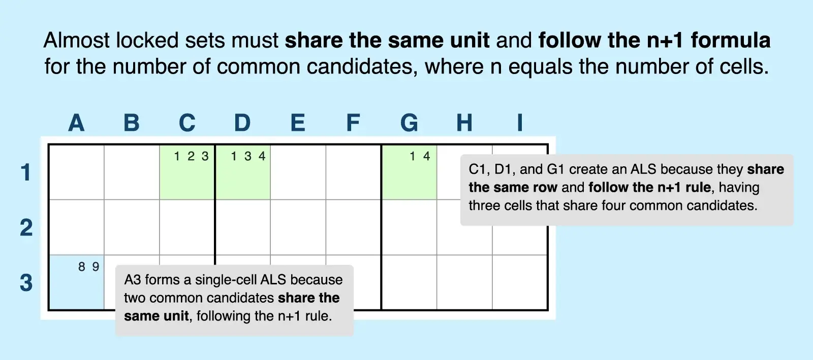
Um conjunto quase bloqueado deve atender aos seguintes critérios:
Estar na mesma unidade: Todas as células devem estar na mesma linha, coluna ou bloco. Por exemplo, C1, D1 e G1 estão na mesma linha.
Compartilhar um candidato comum a mais do que o número de células no grupo: Seguindo a fórmula n+1, o número de candidatos comuns deve ser um a mais do que o número de células no conjunto. Por exemplo, o conjunto de candidatos para as três células (C1, D1 e G1) inclui quatro candidatos (1, 2, 3 e 4), que é um a mais do que o número de células nesse grupo.
Portanto, C1, D1 e G1 criam um conjunto quase bloqueado. O ALS mais básico, no entanto, é um com o qual você provavelmente já está familiarizado: uma única célula bivalorada. Como uma célula bivalorada se refere a uma célula com apenas dois candidatos, ela se encaixa na fórmula n+1 de ter um candidato a mais (2) do que o número de células (1). Por exemplo, A3 é uma célula bivalorada porque possui apenas dois candidatos (8, 9), sendo, portanto, também um conjunto quase bloqueado.
Isoladamente, conjuntos quase bloqueados não oferecem muitas possibilidades de eliminação. No entanto, se você estabelecer uma relação entre dois grupos ALS que possuem candidatos específicos em comum, poderá usar essa técnica avançada para realizar eliminações poderosas.
Exemplos de conjuntos quase fechados
Para eliminar candidatos em quebra-cabeças, você deve estabelecer uma relação entre pelo menos dois conjuntos quase bloqueados. Você pode estabelecer essa relação com diferentes tipos de candidatos compartilhados:
Candidato comum restrito (CCR): Um candidato comum restrito deve aparecer em ambos os conjuntos, e cada ocorrência desse candidato em um ALS deve ver (compartilhar uma unidade com) todas as ocorrências desse candidato no outro ALS.
Candidato comum irrestrito: Um candidato comum irrestrito deve aparecer em ambos os conjuntos, mas pelo menos uma ocorrência em um ALS não pode ver todas as ocorrências no outro ALS.
Embora você possa encontrar esses conjuntos com frequência em quebra-cabeças, encontrar essas relações especiais para a resolução de Sudoku pode ser um pouco mais complicado, então as detalhamos nas seções a seguir.
Lembre-se: A estratégia ALS pode se sobrepor a outras técnicas de resolução. Por exemplo, XYZ-wings e WXYZ-wings são compostos por dois conjuntos quase bloqueados e são um subconjunto do ALS-XZ Tipo 1. Ou você pode descobrir que é possível expressar eliminações por meio de cadeias de inferência alternadas (AIC). Mas a técnica ALS vai além desses subtipos, e reconhecer as relações entre os conjuntos oferece ainda mais oportunidades para eliminar candidatos.
ALS-XZ Tipo 1
O tipo 1 possui um único candidato comum restrito (RCC). Para encontrar esse tipo, você precisa encontrar dois conjuntos quase bloqueados que estejam conectados por um candidato comum restrito (x) e um candidato comum irrestrito (z).
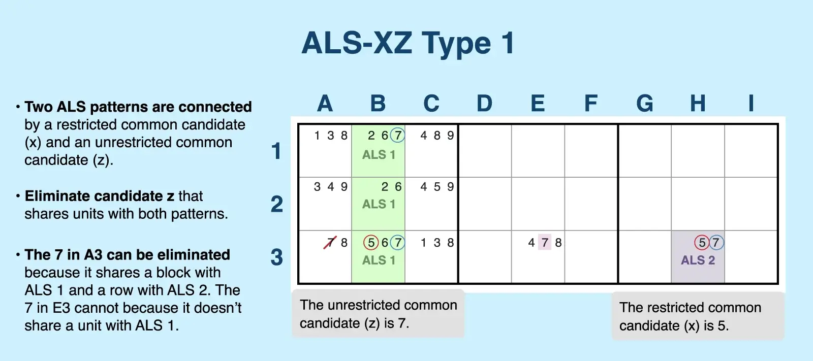
Basta seguir estes passos para encontrar um Conjunto de Tipo 1:
Encontre o Conjunto de Tipo 1. Por exemplo, três células no mesmo bloco (B1, B2 e B3) têm quatro candidatos em comum (2, 5, 6 e 7), criando o Conjunto de Tipo 1.
Encontre o Conjunto de Tipo 2 que compartilha pelo menos dois candidatos com o Conjunto de Tipo 1. Assim como no primeiro conjunto, você deve encontrar uma célula bivalorada ou um grupo de células não resolvidas na mesma unidade com um candidato em comum a mais do que o número de células. Por exemplo, a célula bivalorada em H3 (5, 7) é um conjunto quase bloqueado. Esta única célula tem dois candidatos, então atende ao critério n+1. Este Conjunto de Tipo está na mesma linha que B3, que faz parte do Conjunto de Tipo 1, e ambas as células compartilham dois candidatos (5, 7). Portanto, H3 é o Conjunto de Tipo 2.
Confirme se os conjuntos compartilham um candidato comum restrito (x). Neste caso, o número 5 aparece em ambos os conjuntos — em B3 no ALS 1 e em H3 no ALS 2. Cada ocorrência de 5 em ambos os conjuntos vê a outra. Portanto, 5 é o candidato x.
Identifique o candidato comum irrestrito (z). O segundo candidato comum deve ser um candidato comum irrestrito. Por exemplo, 7 ocorre em B3 e H3, então é um candidato comum compartilhado. Embora também seja encontrado em B1, que ainda faz parte do ALS 1, H3 não pode ver essa célula, então 7 não é restrito, tornando-o o candidato z.
Elimine o candidato z de qualquer célula que compartilhe unidades com ambos os conjuntos quase bloqueados. Por exemplo, A3 compartilha um bloco com o ALS 1 e uma linha com o ALS 2, então o 7 nessa célula pode ser eliminado. Como E3 compartilha apenas uma linha com o ALS 2, mas não compartilha uma unidade com o ALS 1, esse 7 não pode ser eliminado.
ALS-XZ Tipo 2
Este tipo oferece um conjunto de eliminações mais poderoso e exige que x e z sejam dois candidatos comuns restritos. Embora você ainda precise de dois conjuntos quase bloqueados com este tipo, não precisa de um candidato comum irrestrito e descobrirá que pode eliminar vários candidatos no processo.
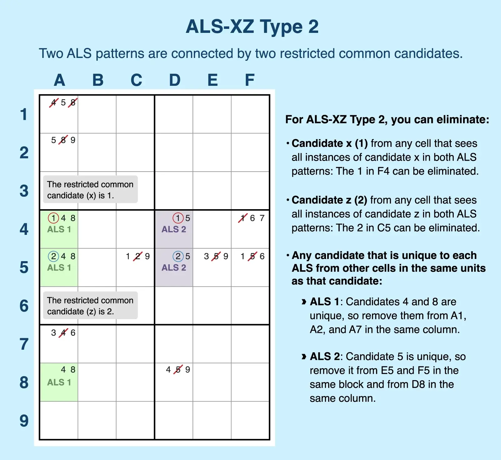
Siga estes passos para encontrar este tipo:
Encontre o ALS 1. Por exemplo, três células na mesma coluna (A4, A5 e A8) têm quatro candidatos em comum (1, 2, 4 e 8), criando o ALS 1.
Encontre o ALS 2 que compartilha dois candidatos comuns restritos com o ALS 1. Por exemplo, as células D4 e D5 compartilham uma coluna e contêm três candidatos em comum (1, 2 e 5), portanto, atendem aos critérios n+1, criando o ALS 2.
Confirme se os conjuntos compartilham um candidato comum restrito (x). O candidato comum restrito deve aparecer em ambos os conjuntos, e cada ocorrência desse candidato em um ALS deve ver (compartilhar uma unidade com) todas as ocorrências desse candidato no outro ALS. Neste caso, 1 aparece em ambos os conjuntos — em A4 no ALS 1 e em D4 no ALS 2. Cada ocorrência de 1 em ambos os conjuntos vê a outra. Portanto, 1 é o candidato x.
Confirme se os conjuntos compartilham um candidato comum restrito (z). O segundo candidato comum restrito deve aparecer em ambos os conjuntos, e cada ocorrência desse candidato em um ALS deve ver (compartilhar uma unidade com) todas as ocorrências desse candidato no outro ALS. Neste caso, 2 aparece em ambos os conjuntos — em A5 no ALS 1 e em D5 no ALS 2. Cada ocorrência de 2 em ambos os conjuntos vê a outra. Portanto, 2 é o candidato z.
Elimine o candidato x de qualquer célula que apresente todas as instâncias do candidato x em ambos os padrões ALS. Por exemplo, 1 (candidato x) é encontrado em A4 (ALS 1) e D4 (ALS 2), e essas duas células compartilham uma linha, portanto, quaisquer 4s nessa linha fora dos dois padrões ALS podem ser eliminados. Como F4 tem um 1 e apresenta células de ALS 1 e ALS 2, esse 4 pode ser eliminado.
Elimine o candidato z de qualquer célula que apresente todas as instâncias do candidato z em ambos os padrões ALS. Por exemplo, 2 (candidato z) é encontrado em A5 (ALS 1) e D5 (ALS 2), e essas duas células compartilham uma linha, portanto, quaisquer 5s nessa linha fora dos dois padrões ALS podem ser eliminados. Como C5 tem um 2 e apresenta células de ALS 1 e ALS 2, esse 2 pode ser eliminado.
Elimine qualquer candidato que seja exclusivo de cada ALS das outras células na mesma unidade que esse candidato. É nesta etapa que o Tipo 2 revela seu poder de eliminação. Como esse tipo possui dois candidatos restritos, qualquer candidato exclusivo de um ALS pode ser eliminado dentro da unidade do ALS, fora das células que o compõem.
Verifique se há candidatos exclusivos no ALS 1 que podem ser removidos da unidade. Por exemplo, o ALS 1 (A4, A5 e A8) contém os candidatos 4 e 8, que não são compartilhados com o ALS 2, portanto, atuam como subconjuntos ocultos e podem ser eliminados de A1, A2 e A7 porque compartilham uma coluna com o ALS 1.
Verifique se há candidatos exclusivos no ALS 2 que podem ser removidos da unidade. ALS 2 (D4 e D5) tem um candidato único (5) em comparação com ALS 1. Portanto, os 5s podem ser eliminados de E5 e F5 porque compartilham um bloco com ALS 2, mas o 5 em D8 também pode ser eliminado porque compartilha uma coluna com ALS 2.
ALS-XY-Wing
Para este tipo, você precisa encontrar três conjuntos quase bloqueados, e isso exige que x e y sejam dois candidatos comuns restritos. Segue uma lógica semelhante à da técnica XY-wing.
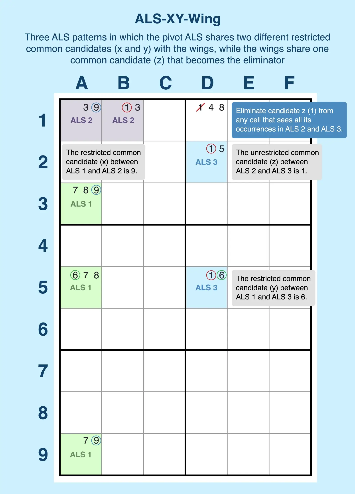
Siga estes passos para encontrar este tipo:
Encontre ALS 1. Três células na mesma coluna (A3, A5 e A9) têm quatro candidatos comuns em comum (6, 7, 8 e 9), formando ALS 1.
Encontre ALS 2 com um candidato comum restrito (x) em comum com ALS 1. Duas células na mesma linha (A1 e B1) compartilham três candidatos em comum (1, 3 e 9), formando ALS 2. Cada ocorrência de 9 em ALS 1 e ALS 2 vê a outra, tornando 9 o candidato comum restrito (x).
Encontre ALS 3 com um candidato comum restrito (y) em comum com ALS 1. Duas células na mesma linha (D2 e D5) compartilham três candidatos em comum (1, 5 e 6), formando ALS 3. Todos os 6 em ALS 1 e ALS 3 se veem, tornando 6 o candidato comum restrito (y).
Confirme que ALS 2 e ALS 3 compartilham um candidato em comum (z). Tanto o ALS 2 quanto o ALS 3 compartilham o candidato comum 1 (z). Esse candidato compartilhado pode ser restrito ou irrestrito, e as ocorrências de z em cada ALS não precisam se encontrar.
Elimine o candidato z das células que veem todas as instâncias de z no ALS 2 e no ALS 3. Por exemplo, o candidato 1 (z) aparece em D1, que compartilha uma linha com o ALS 2 e uma coluna com o ALS 3, e vê todos os 1s no ALS 2 (B1) e no ALS 3 (D2 e D5). Portanto, o 1 em D1 pode ser eliminado.
Sudoku Phistomefel Ring: Casos de Uso e Exemplos
O anel de Phistomefel, também conhecido como teorema de Phistomefel, afirma que os quatro conjuntos de células 2x2 em cada canto do quebra-cabeça devem conter os mesmos 16 dígitos que o anel de 16 células que circunda o bloco central 3x3. Essa estratégia de Sudoku, introduzida pelo criador do quebra-cabeça que usa o pseudônimo "Phistomefel", permite restringir as possibilidades de posicionamento nessas células e eliminar candidatos à medida que você resolve o quebra-cabeça.
Quando você se depara com dificuldades usando outras técnicas de Sudoku, o anel de Phistomefel pode ajudar a desvendar o quebra-cabeça e revelar novas possibilidades de posicionamento ao jogar Sudoku online.
Entendendo a Teoria da Equivalência de Conjuntos
Equivalência de conjuntos no Sudoku significa que, quando unidades equivalentes se sobrepõem, as células fora da sobreposição devem conter os mesmos números restantes.
Por exemplo, como cada unidade deve incluir os dígitos de 1 a 9 exatamente uma vez, quando uma unidade se sobrepõe a outra (como uma linha sobrepondo-se a uma coluna), a célula sobreposta contém um dígito compartilhado e todas as células não sobrepostas devem conter o mesmo conjunto de dígitos (um conjunto equivalente).
Mais especificamente, a linha 3 e a coluna C se sobrepõem em uma célula, C3. Como essa linha e coluna só podem conter os dígitos de 1 a 9 e nenhum pode se repetir, a célula C3 deve ter apenas uma resposta. Nesse caso, C3 é 6. Isso significa que dois conjuntos dos mesmos números — 1, 2, 3, 4, 5, 7, 8 e 9 — devem aparecer em algum lugar tanto na linha 3 quanto na coluna C.
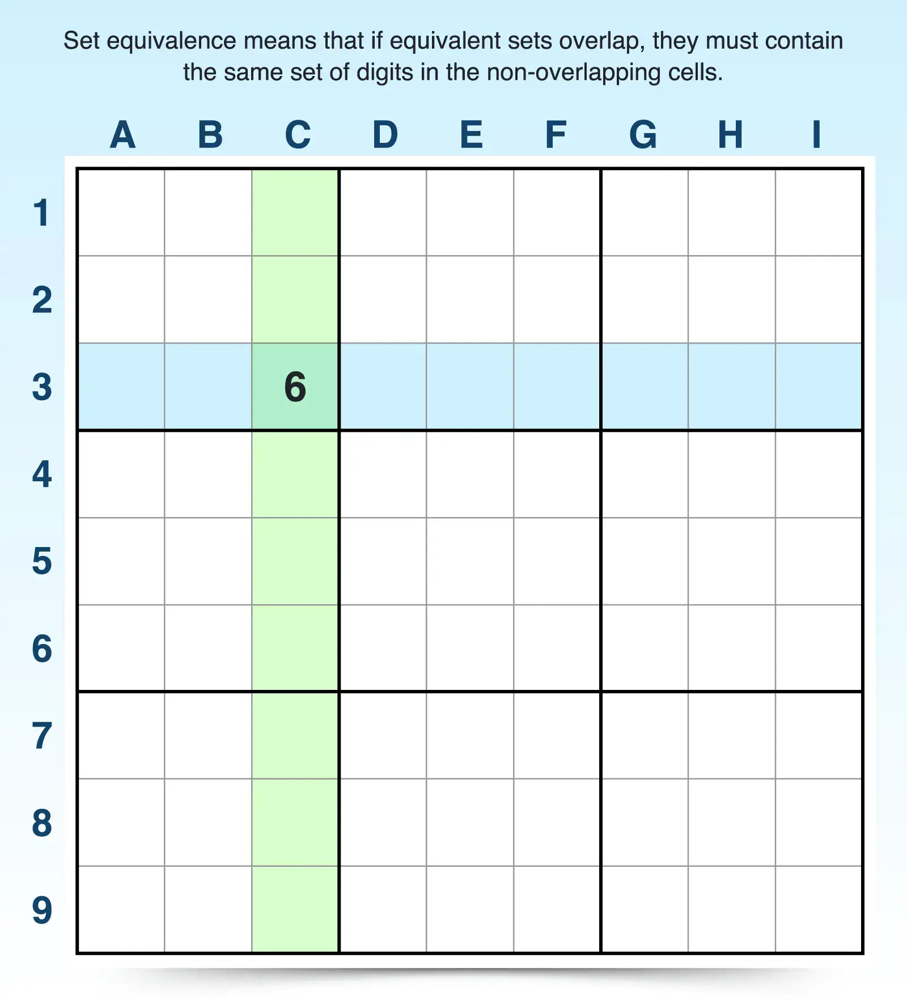
Como funciona o anel Phistomefel
Para usar a técnica do anel de Phistomefel, você deve garantir que a quantidade de ocorrências de um determinado candidato nos cantos do quebra-cabeça corresponda à quantidade de ocorrências dele no anel, e vice-versa. Os quatro quadrados 2x2 em cada canto (sombreados em verde) devem conter o mesmo conjunto de dígitos que o anel de 16 células que circunda o bloco central (sombreado em azul). Ao entender como isso funciona, você poderá usar essa técnica a seu favor ao resolver quebra-cabeças de Sudoku.
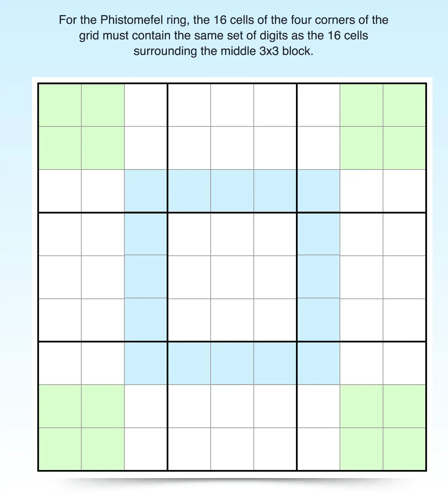
O anel de Phistomefel se baseia no fato de que unidades sobrepostas devem ter conjuntos de números equivalentes para que a técnica do anel seja criada. Considere como a sobreposição impacta o posicionamento dos candidatos examinando o raciocínio por trás do teorema:
Identifique os conjuntos.
Linhas 1, 2, 8 e 9: Essas 36 células sombreadas (verde) devem conter os números de 1 a 9 exatamente quatro vezes (uma vez por linha).
Colunas C, D, E e G: Essas 45 células sombreadas (roxo claro) devem conter os números de 1 a 9 exatamente cinco vezes (uma vez por coluna).
Crie a equivalência de conjuntos.
Como existem 45 células nas colunas, mas apenas 36 nas linhas, as colunas têm um conjunto extra de números, o que significa que não possuem equivalência de conjuntos.
Para criar a equivalência, você deve remover um conjunto (o bloco central 3x3).
Forme o anel.
Remova as células sobrepostas (roxo claro). As células não sobrepostas devem conter o mesmo conjunto de dígitos, o que cria o anel de Phistomefel (azul claro).
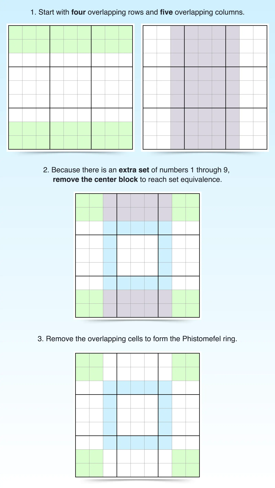
Exemplo de anel Phistomefel
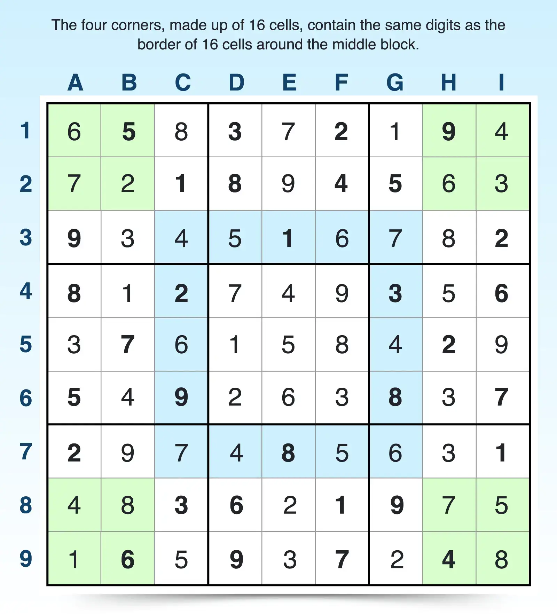
Por exemplo, os cantos deste quebra-cabeça são preenchidos com as seguintes respostas:
Canto superior direito: 2, 5, 6, 7
Canto superior esquerdo: 3, 4, 6, 9
Canto inferior direito: 1, 4, 6, 8
Canto inferior esquerdo: 4, 5, 7, 8
Com essas células preenchidas, você pode ver que o anel de Phisotmefel deve conter 1, 2, 3, 4, 4, 4, 5, 5, 6, 6, 6, 7, 7, 8, 8 e 9. Observando as 16 células que circundam o bloco central 3x3, você vê esses mesmos números, nessas mesmas quantidades, preenchendo as células do anel.
Ao resolver quebra-cabeças, você sabe que os dígitos e a quantidade de vezes que cada dígito aparece devem corresponder à medida que você preenche os cantos e o anel. Se algum desses números estiver faltando ou a quantidade estiver errada (como, por exemplo, aparecerem apenas dois 4 quando deveriam haver três), você pode comparar as respostas conhecidas nos cantos com o círculo e vice-versa. Isso permite que você forme um conjunto de números que podem ser colocados nessas células. Depois de perceber outras restrições, como números dados ou outros candidatos que afetam essas células, você pode restringir ainda mais as possibilidades.
Usando o Anel de Phistomefel para Encontrar Respostas
Usar a técnica do anel de Phistomefel é simplesmente uma questão de equilíbrio. Ao descobrir o número de vezes que um candidato aparece nos quatro cantos, você sabe que ele precisa aparecer essa mesma quantidade de vezes no anel, e vice-versa. Esse conhecimento pode ajudá-lo tanto a eliminar quanto a posicionar candidatos nas células dessas áreas (o anel e os cantos).
Ao resolver um quebra-cabeça de Sudoku, você pode contabilizar quantas vezes um candidato aparece nas áreas-chave de Phistomefel. Criar uma tabela rápida pode ajudá-lo a acompanhar. Por exemplo, o quebra-cabeça abaixo usaria a seguinte tabela em seu estágio atual de resolução.
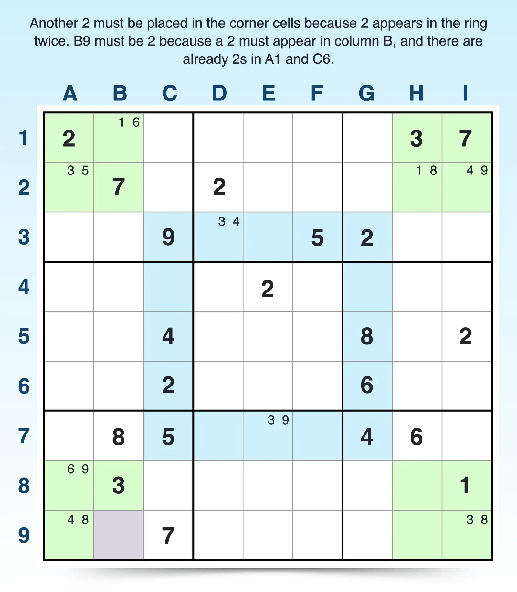
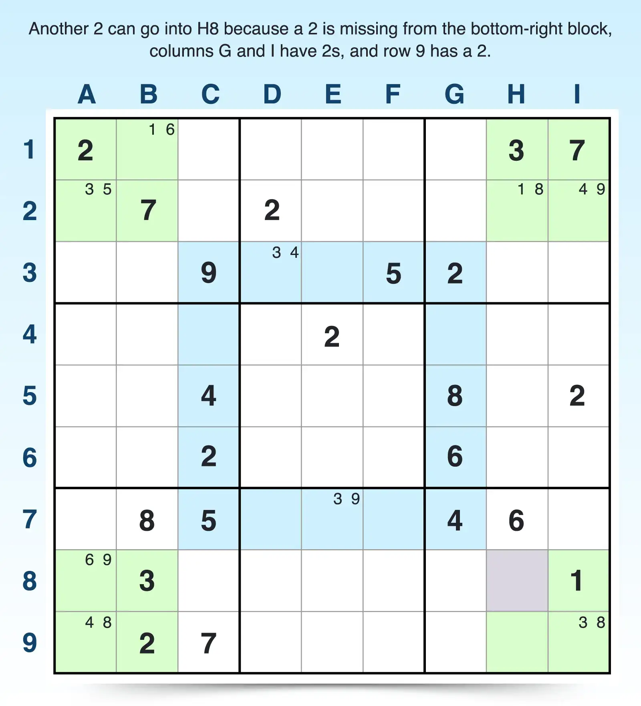
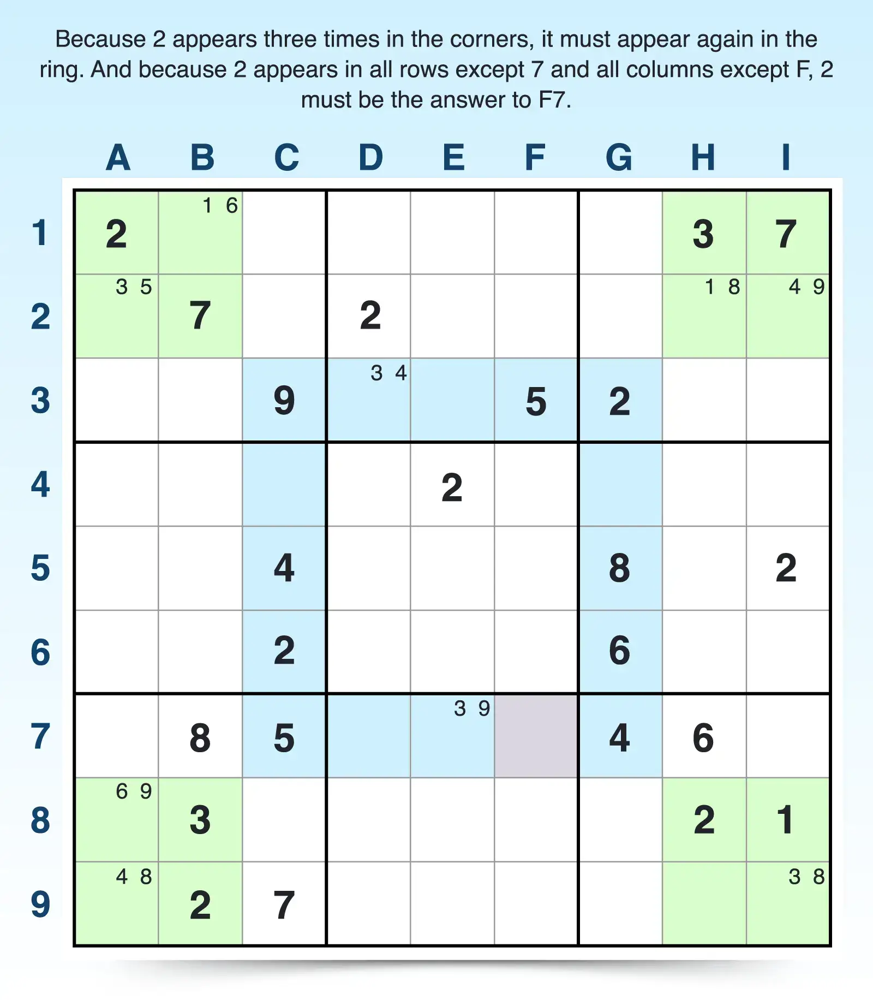
Técnica do Último Candidato Possível: Casos de Uso e Exemplos
A estratégia do último candidato possível é uma técnica básica de resolução de Sudoku que ajuda a encontrar o único número que cabe em uma célula, eliminando possibilidades da sua linha, coluna e bloco 3x3. Quando um número está ausente em todas as três unidades e todos os outros números estão presentes pelo menos uma vez, o número que falta deve ser a resposta para a célula.
Embora muitos iniciantes usem essa técnica, todos os jogadores de Sudoku dependem dessa estratégia fundamental para eliminar colocações óbvias, especialmente se estiverem usando a eficiente notação de Snyder. E a lógica dessa estratégia sustenta outros padrões, como números isolados, números isolados ocultos e candidatos bloqueados, bem como estratégias mais avançadas. Portanto, dominar essa técnica pode ajudá-lo não apenas a resolver mais quebra-cabeças de Sudoku, mas também a subir de nível ao jogar Sudoku online.
Como Encontrar o Último Candidato Possível
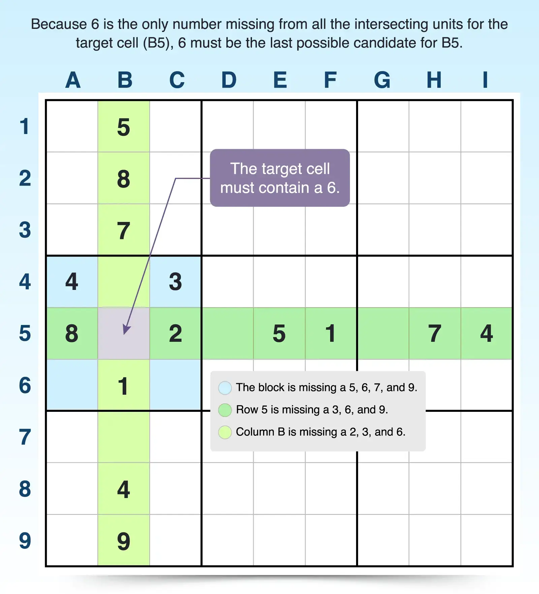
Para encontrar o último número candidato possível para uma unidade, siga estes passos:
1. Selecione uma célula alvo - Você pode selecionar qualquer célula vazia em qualquer linha, coluna ou bloco 3x3 como alvo. Para iniciantes, é mais fácil começar com uma célula que tenha muitas respostas em suas três unidades adjacentes. Neste exemplo, a célula B5 tem muitas respostas em sua linha (5) e coluna (B), tornando-a uma boa escolha para esta estratégia.
Uma célula alvo não precisa ser a única célula restante em uma unidade. Mesmo que uma unidade tenha várias células vazias, você ainda poderá determinar o último número possível se as unidades adjacentes já contiverem muitas respostas.
2. Liste os valores dados e as respostas em cada unidade - Identificar os valores dados (números já presentes na grade) e as respostas (posições que você fez) ajuda a restringir os possíveis candidatos para uma célula. Qualquer número já presente na linha, coluna ou bloco 3x3 não pode ser colocado na célula de destino.
Por exemplo, os seguintes números já estão posicionados nas unidades da célula B5, portanto, não podem ser a resposta para a sua célula de destino:
Linha 5: 1, 2, 4, 5, 7 e 8
Coluna B: 1, 4, 5, 7, 8 e 9
Bloco 3x3 (colunas A a C e linhas 4 a 6): 1, 2, 3, 4 e 8
3. Identifique os números ausentes em cada unidade - Como uma célula não pode repetir números de nenhuma unidade, concentre-se em quais números estão faltando em sua linha, coluna e bloco. Comparando os números ausentes com os números presentes nas três unidades, você pode concluir o seguinte:
Se você descobrir que um número está faltando em uma unidade, mas está presente em outra, então você sabe que esse candidato não pode ser a resposta para a sua célula alvo. Isso o elimina como possibilidade.
Se você encontrar apenas um número ausente em cada unidade, esse número é o seu último candidato possível para a sua célula alvo.
Se mais de um número estiver faltando em todas as unidades, você não pode confirmar o último candidato possível, mas pode restringir os candidatos para a célula, o que é útil para outras técnicas básicas de resolução.
Neste exemplo, os números ausentes incluem:
Linha 5: 3, 6 e 9
Coluna B: 2, 3 e 6
Bloco 3x3: 5, 6, 7 e 9
Apenas um número, o número 6, está faltando em todas as unidades. Isso significa que um 6 deve ser colocado em B5 para que cada uma de suas unidades tenha os números de 1 a 9 preenchidos, sem repetições.
Você pode ver isso comparando os números dados e os números faltantes nas unidades que se cruzam. Embora a linha 5 esteja sem os números 3, 6 e 9, a coluna B contém um 9, o que reduz os candidatos possíveis a apenas 3 e 6. No entanto, como o bloco 3x3 tem um 3, o 3 não pode ser um candidato, o que significa que o último candidato possível para a célula B5 é o 6.
Com a prática, você conseguirá contar mentalmente de 1 a 9 e eliminar os números que já estão nas unidades que se cruzam, facilitando a identificação do último candidato possível.
Lembre-se: você nem sempre encontrará o último candidato possível, especialmente à medida que avança para quebra-cabeças de Sudoku mais difíceis. Mas esse processo ainda lhe dá uma vantagem. Ao comparar os números que faltam com os dados fornecidos e as respostas em cada unidade, você pode restringir as possibilidades, adicionar anotações a lápis e construir uma base para muitas outras estratégias de Sudoku.
Últimos exemplos de candidatos possíveis
Você pode tentar encontrar o último número possível em qualquer célula, mas o segredo é escolher uma célula que pertença a pelo menos uma unidade com muitas respostas já definidas, principalmente se você for iniciante. Você pode usar essa técnica de Sudoku em qualquer etapa da resolução do quebra-cabeça.
Exemplo do Último Número Possível de uma Linha
Para encontrar o último número possível de uma linha, siga estes passos:
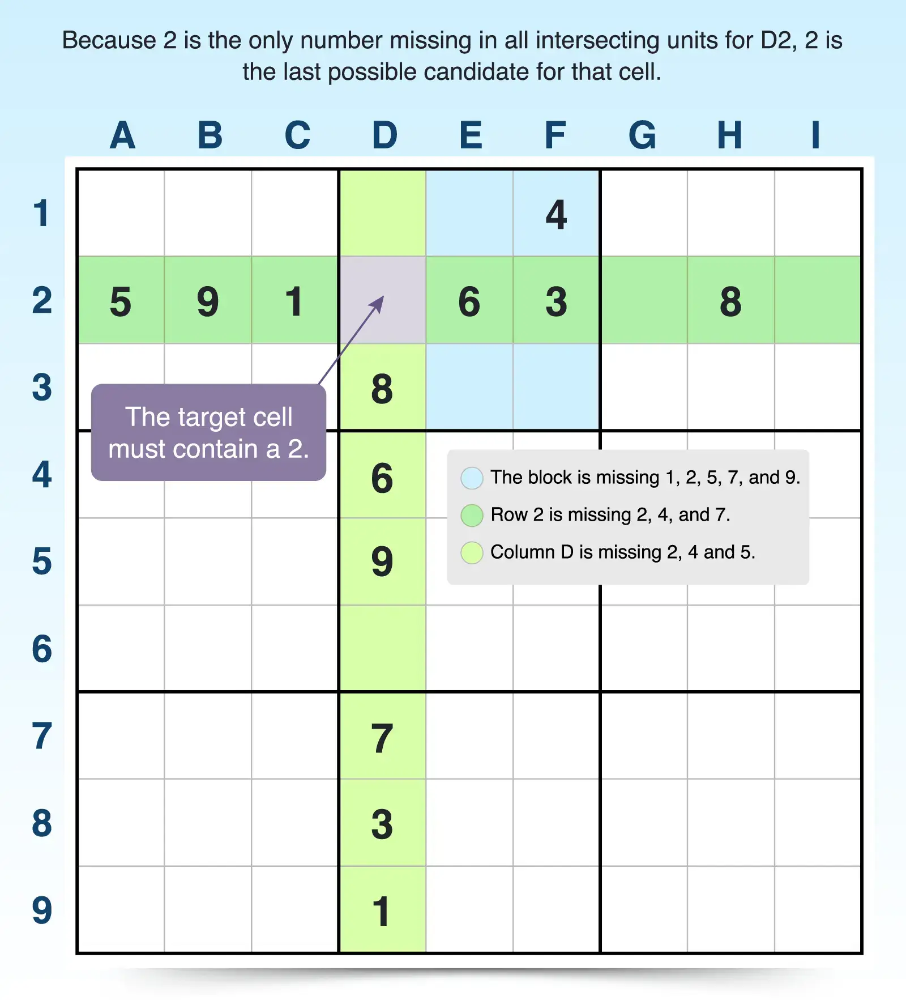
Selecione uma célula vazia em uma linha para trabalhar. Normalmente, começar selecionando uma célula com muitos valores presentes em suas unidades adjacentes é mais fácil. Por exemplo, a célula D2 é uma boa escolha porque a linha 2 e a coluna D têm muitos valores presentes.
Liste os valores presentes em cada unidade. Por exemplo, a linha 2 tem os números 1, 3, 5, 6, 8 e 9; a coluna D tem os números 1, 3, 6, 7, 8 e 9; e o bloco 3x3 (linhas 1 a 3 das colunas D a F) tem os números 3, 4, 6 e 8.
Identifique os números que faltam em cada unidade. Os números que faltam na linha 2 são 2, 4 e 7. Na coluna D faltam os números 2, 4 e 5; e no bloco faltam os números 1, 2, 5, 7 e 9. Como o número 2 está faltando em todas as unidades, ele é o último candidato possível e deve ser colocado em D2.
Último número possível para um exemplo de coluna
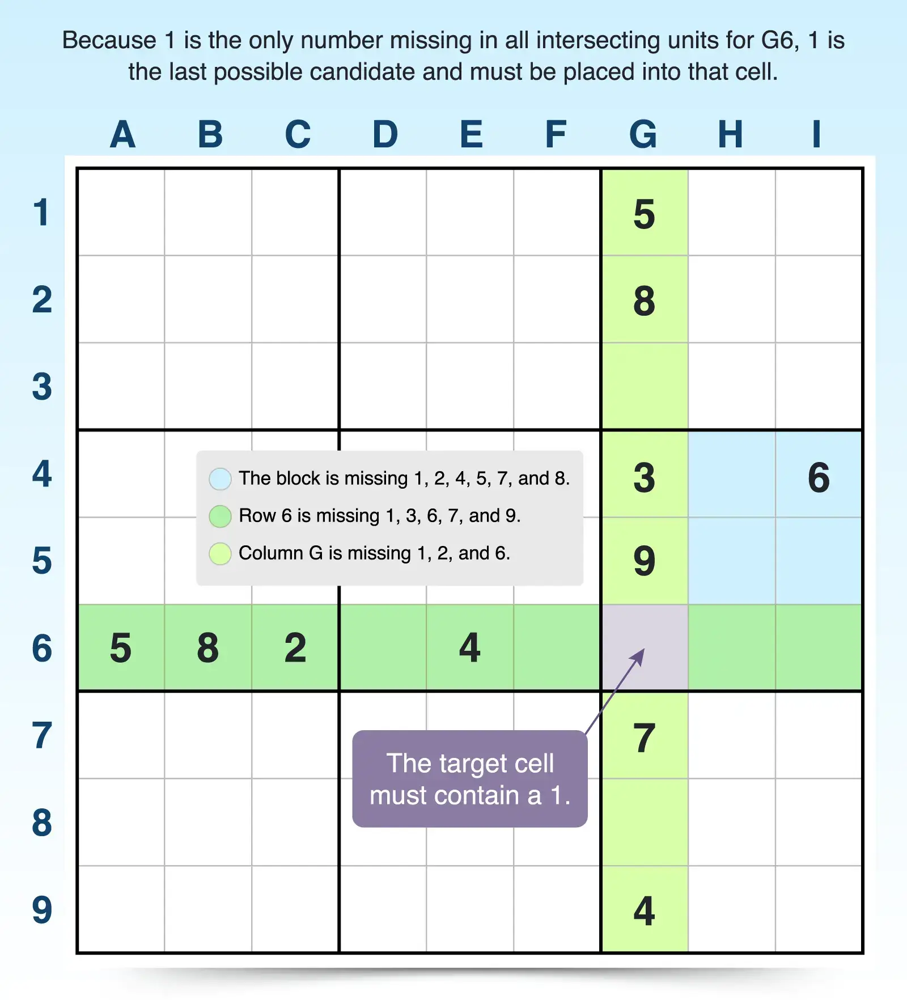
Para encontrar o último candidato possível para uma coluna, siga estes passos:
Selecione uma célula alvo em uma coluna. Tente encontrar uma que já tenha muitas respostas ou valores dados em suas unidades. Por exemplo, as unidades associadas a G6 têm muitos valores dados.
Liste os valores dados em cada unidade. Por exemplo, a coluna G tem os números 3, 4, 5, 7, 8 e 9, e a linha 6 tem os números 2, 4, 5 e 8. O bloco 3x3 (com as linhas 4 a 6 das colunas G a I) tem os números 3, 6 e 9.
Identifique os números que faltam em cada unidade. Por exemplo, a coluna G não tem os números 1, 2 e 6, e a linha 6 não tem os números 1, 3, 6, 7 e 9. E o bloco não tem os números 1, 2, 4, 5, 7 e 8. O candidato 1 está faltando em todas as unidades, o que significa que o último candidato possível para G6 deve ser 1.
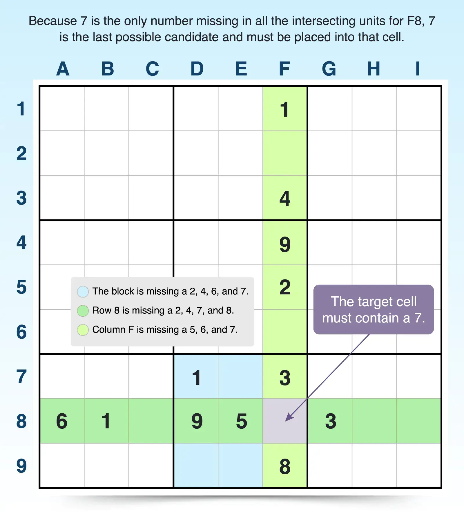
Selecione uma célula alvo em um bloco. Embora seja útil encontrar uma célula dentro de um bloco que já tenha muitos valores dados, você também pode procurar uma célula com muitas respostas em sua linha e coluna relacionadas. Por exemplo, a célula F8 tem muitos valores dados no bloco (linhas 7 a 9 e colunas D a F) e também tem várias respostas em suas unidades relacionadas (linha 8 e coluna F).
Liste os valores dados em cada unidade. Por exemplo, o bloco já tem os números 1, 3, 5, 8 e 9. A linha 8 tem os números 1, 3, 5, 6, 8 e 9, e a coluna F tem os números 1, 2, 3, 4, 8 e 9.
Identifique os números que faltam em cada unidade. Por exemplo, este bloco está faltando os números 2, 4, 6 e 7. A linha 8 está faltando os números 2, 4, 7 e 8, e a coluna F está faltando os números 5, 6 e 7. Como o candidato 7 está faltando em todas as unidades relacionadas a F8, 7 é o último candidato possível para essa célula.
Embora técnicas avançadas como X-wing, swordfish ou XY-wing possam ser necessárias para quebra-cabeças de Sudoku difíceis, começar com a técnica do último candidato possível estabelece uma base sólida para resolver quebra-cabeças de Sudoku.
Seja você enfrentando um quebra-cabeça de Sudoku fácil ou travado em um difícil, aplicar a técnica do último candidato possível aproveita os dados e as marcas de lápis em um quebra-cabeça para descobrir um único candidato que quebra o impasse.
Peixes Mutantes
Quando os peixes não estão mais restritos a linhas e colunas, surgem variedades estranhas. Quando o conjunto definidor ou o conjunto secundário contém uma mistura de linhas, colunas e/ou caixas, esses peixes são classificados como peixes mutantes.
Não existem X-Wings mutantes, porque a interação entre uma única caixa e linha é totalmente coberta pela técnica de Candidatos Bloqueados.
Aqui está um diagrama de um Peixe-Espada Mutante, com o conjunto definidor consistindo de 2 linhas e 1 coluna, e o conjunto secundário contendo 1 coluna e 2 caixas.
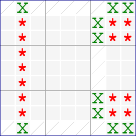
Nice Loops - Belos Loops
O que são Nice Loops?
Nice Loops são técnicas de Sudoku de nível mestre que representam a evolução de Cadeias Forçadas em estruturas circulares. Em vez de traçar caminhos abertos que convergem, Nice Loops formam loops fechados—cadeias que se conectam de volta aos seus pontos de início.
A beleza dos Nice Loops reside na sua estrutura circular: se começar com a suposição de que um candidato é verdadeiro (ou falso) e traçar uma cadeia de implicações lógicas que eventualmente contradiz essa suposição original, provou que a suposição inicial estava errada. Isto cria eliminações ou colocações garantidas através de lógica pura auto-referencial.
Nice Loops alternam entre ligações fortes e fracas—exatamente como Cadeias de Inferência Alternante—mas a diferença crítica é que o loop fecha em si mesmo, criando um círculo lógico completo.
Por que se chamam "Nice Loops"?
O nome "Nice Loops" vem da literatura de resolução de Sudoku, onde "nice" refere-se a cadeias que alternam ligações fortes e fracas de forma bem-comportada. O nome distingue estes loops formalizados de outros tipos de lógica circular em Sudoku.
Também chamados "Loops Agradáveis" ou "Ciclos" em Português, são às vezes referidos como "Cadeias Fechadas" ou "Alternating Inference Loops" em contextos técnicos.
Por Que Importam
Nice Loops são cruciais porque:
Unificam múltiplas técnicas — X-Cycles, XY-Chains e muitos padrões são casos especiais de Nice Loops
Proporcionam lógica circular poderosa — Auto-contradições provam conclusões sem tentativa-e-erro
Resolvem puzzles extremamente difíceis — Muitos puzzles diabólicos requerem Nice Loops
Demonstram elegância matemática — Mostram a estrutura lógica profunda do Sudoku
Estendem Cadeias Forçadas — Adicionam estrutura circular a técnicas de cadeia linear
Tipos de Nice Loops
1. Nice Loop Contínuo (CNL)
Um loop com um número par de ligações fracas. Se tentar definir o candidato inicial como falso, o loop força-o a ser verdadeiro—uma contradição. Portanto, o candidato deve ser verdadeiro.
Estrutura: A=B-C=D-E=F-A (volta ao início)
Regra: Se o número de ligações fracas (-) é par, o candidato de início deve ser verdadeiro.
2. Nice Loop Descontínuo (DNL)
Um loop onde duas ligações fracas encontram-se na mesma célula ou unidade. As células que veem ambas as extremidades dessas ligações fracas podem ter o candidato eliminado.
Estrutura: A=B-C=D-E (onde A e E veem a mesma célula X)
Regra: Elimine o candidato de células que veem ambas as extremidades do segmento fraco.
3. X-Cycles
Nice Loops que usam apenas um candidato. São ciclos de pares conjugados (ligações fortes) para esse candidato. X-Cycles são mais fáceis de detetar porque focam-se num único dígito.
4. XY-Chains
Nice Loops através de células bi-valor. Cada célula na cadeia tem exatamente dois candidatos, criando ligações fortes naturais. XY-Chains conectam XY-Wing a técnicas de loop mais gerais.
Passo a Passo: Como Encontrar Nice Loops
Identifique candidatos iniciais — Procure pares conjugados ou células bi-valor.
Construa uma cadeia — Alterne entre ligações fortes (=) e fracas (-).
Procure o ponto de fecho — Trace até a cadeia conectar-se de volta ao início.
Conte ligações fracas — Número par = loop contínuo; número ímpar = procure descontinuidade.
Verifique contradições — Para loops contínuos, o candidato inicial é forçado a ser verdadeiro.
Encontre eliminações — Para loops descontínuos, elimine de células que veem extremidades fracas.
Exemplo: Nice Loop Contínuo
Configuração:Loop para candidato 7: L1C2=L1C8-L5C8=L5C3-L1C3=L1C2
Análise - Este loop tem 4 ligações fracas (número par). Se L1C2≠7, então o loop força L1C2=7 através da cadeia—uma contradição. Portanto, L1C2 deve ser 7.
Notação
L1C2=L1C8 significa: se L1C2≠7 então L1C8=7 (par conjugado, ligação forte)
L1C8-L5C8 significa: se L1C8=7 então L5C8≠7 (veem-se, ligação fraca)
O loop fecha quando retorna a L1C2
Exemplo: Nice Loop Descontínuo
Configuração: Loop para candidato 3: L2C5=L2C9-L6C9=L6C1-L2C1
Análise - Este loop tem ligações fracas que não fecham perfeitamente. L2C5 e L2C1 estão ambas na Linha 2 mas não se conectam diretamente. Qualquer célula que vê ambas L2C5 e L2C1 não pode ser 3.
Eliminação - Se L2C3 vê tanto L2C5 como L2C1, elimine 3 de L2C3. O loop força que 3 apareça em L2C5 ou L2C1 (ou ambas impossível por lógica de cadeia), então L2C3 não pode ter 3.
Estratégias para Encontrar Nice Loops
Comece com X-Cycles — Loops de candidato único são mais fáceis de detetar.
Use software de resolução — Deteção de loops é computacionalmente intensiva.
Procure células bi-valor — XY-Chains frequentemente formam loops naturais.
Construa sistematicamente — Não tente ver o loop completo de uma vez.
Verifique contagens de ligações — Par vs ímpar determina tipo de loop.
Pratique com exemplos — Estude loops conhecidos antes de procurar os seus próprios.
Erros Comuns
Contar mal ligações fracas — Par vs ímpar muda completamente o tipo de loop.
Perder o ponto de fecho — Loops devem conectar-se de volta ao início, não apenas convergir.
Confundir forte com fraca — Cada ligação deve ser verificada cuidadosamente.
Assumir loops onde não há nenhum — Não toda cadeia fecha; algumas são apenas cadeias forçadas.
Omitir técnicas mais simples — Verifique X-Wing, XY-Wing, etc. antes de tentar Nice Loops.
Prática: Identifique o Loop
Cenário: Encontra esta cadeia: (5)L1C2=(5)L1C7-(5)L8C7=(5)L8C2-(5)L1C2
Pergunta: Que tipo de Nice Loop é este, e o que pode concluir?
Resposta: Este é um Nice Loop Contínuo com 2 ligações fracas (número par). A cadeia fecha de volta a L1C2. Se L1C2≠5, o loop força L1C2=5—uma contradição. Portanto, L1C2 deve ser 5. Coloque 5 em L1C2.
Por Que Importam os Nice Loops
Nice Loops representam a essência da lógica circular em Sudoku. Mostram que:
Estruturas auto-referenciais criam provas poderosas
Muitas técnicas avançadas são variantes da mesma lógica de loop
Lógica circular não é adivinhação—é dedução pura
Mesmo os puzzles mais difíceis cedem a raciocínio sistemático
Embora desafiantes para aplicar manualmente, Nice Loops completam a compreensão de técnicas avançadas de Sudoku e proporcionam a ferramenta definitiva para puzzles de nível mestre.
Reflexão Final - Nice Loops são a técnica de Sudoku que melhor captura elegância matemática—loops auto-referenciais que provam verdades através de contradição. Dominá-los significa verdadeiramente dominar a profundidade lógica do Sudoku.
Nice Loops - Cadeias fechadas que criam contradições ou forçam valores - Mestre
Cadeias Forçadas - Caminhos abertos onde rotas convergem na mesma conclusão - Mestre
Coloração Simples - Use duas cores para rastrear pares conjugados - Especialista
O que são Nice Loops em Sudoku? - Nice Loops são técnicas de Sudoku de nível mestre que envolvem cadeias fechadas de inferências lógicas. Ao contrário de cadeias forçadas abertas, Nice Loops formam círculos completos onde a cadeia conecta-se de volta ao ponto inicial, criando contradições que permitem eliminações ou colocações.
Como diferem Nice Loops de Cadeias Forçadas? - Cadeias Forçadas são caminhos abertos que se ramificam de um ponto inicial e convergem numa conclusão. Nice Loops são circuitos fechados que regressam ao início. Esta estrutura circular cria padrões auto-contraditórios que provam que candidatos devem ser verdadeiros ou falsos.
O que são Nice Loops contínuos vs descontínuos? - Nice Loops contínuos têm um número par de ligações fracas e criam contradições diretas—se tentar definir o candidato inicial como falso, o loop força-o a ser verdadeiro. Nice Loops descontínuos têm ligações fracas que não fecham perfeitamente, permitindo eliminações em células que veem ambas as extremidades de um segmento de ligação fraca.
Nice Loops são práticos para resolver manualmente? - Nice Loops são desafiantes para resolver manualmente devido à sua complexidade e dificuldade em detetar cadeias fechadas. No entanto, entendê-los ajuda a reconhecer quando técnicas mais simples não funcionarão e proporciona uma abordagem sistemática para os puzzles mais difíceis. Muitos resolvedores usam assistência de software para deteção de loops.
Que técnicas são casos especiais de Nice Loops? - Muitas técnicas avançadas são variantes de Nice Loop: X-Cycles são Nice Loops usando apenas um candidato, XY-Chains são loops através de células bi-valor, e mesmo padrões como X-Wing e XY-Wing podem ser vistos como Nice Loops curtos. Entender loops unifica estas técnicas aparentemente diferentes.